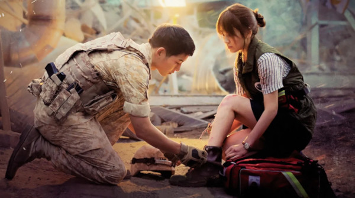

Descendants of the Sun
-to południowokoreański serial telewizyjny z2016 rokuz udziałem Song Joong-ki , Song Hye-kyo , Jin Goo i Kim Ji-won . Był emitowany na KBS2 od 24 lutego do 14 kwietnia 2016 r. Dla 16 odcinków. Następnie wyemitowano trzy dodatkowe odcinki specjalne od 20 do 22 kwietnia 2016 r. zawierające najważniejsze i najlepsze sceny z serialu, proces produkcji dramatu, materiał zza kulis, komentarze członków obsady i ostatni epilog.Serial był wielkim hitem w Korei Południowej, gdzie zdobył 38,8% udziału w widowni. Otrzymał kilka nagród, takich jak zdobycie głównej nagrody w telewizji podczas 52. Baeksang Arts Awards ; i został uznany za najpopularniejszy program roku przez Korea Broadcasting Advertising Corporation.Program był emitowany w całej Azji, gdzie cieszył się ogromną popularnością i przypisuje się mu wzrost ruchu turystycznego w Korei. adaptacje lokalne został wyemitowany w Filipinach i Wietnamie , i adaptacja planowane jest w Chinach . Aktorzy występujący w serialu również otrzymali międzynarodowe uznanie. 